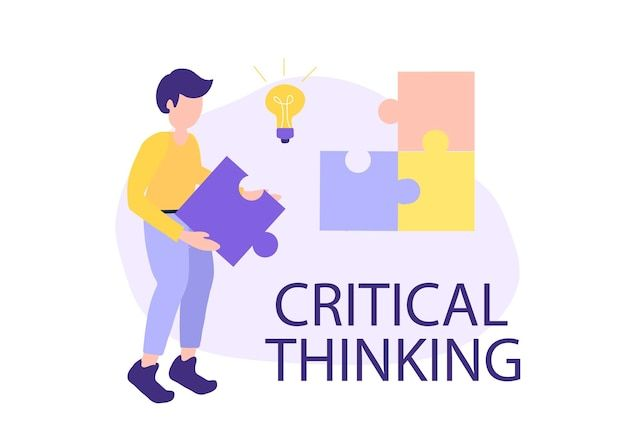

Leadership
I have developed leadership through my active involvement in the Central Language Improvement (CLI) organization, where I contributed to planning and coordinating initiatives to enhance students’ language skills. Leading a small team taught me how to communicate effectively, make decisions under pressure, and motivate others to work toward a shared vision.
I also demonstrated leadership in my personal projects, such as developing a personal finance tracking website and an IoT-based smart irrigation system, where I took initiative in designing, managing, and completing each stage independently while sharing my experience with peers who shared similar interests.
Collaboration and teamwork
I value collaboration as the foundation of meaningful progress. Working as part of the committee for my school’s Debate Championship, I collaborated with over 60 students to organize and execute the event successfully.
These experiences have helped me appreciate the importance of listening to diverse perspectives, building mutual respect, and aligning efforts to achieve common goals.

Critical Thinking
Actively joined school debate competitions and developed my own personal finance tracking website, combining logic and analytical thinking to improve both communication and problem-solving skills.
Curiosity
Driven by curiosity, I constantly explore how technology can be applied to solve real-world problems. This curiosity led me to experiment with web development and build an IoT-based project that measures soil moisture and automates plant watering — integrating technology with practical problem-solving.
Perseverance and Determination
I have completed several online courses related to programming, entrepreneurship, and technology to strengthen my qualifications. I consistently dedicate time to improving my skills and knowledge, and I believe that perseverance and discipline are the keys to achieving meaningful goals.